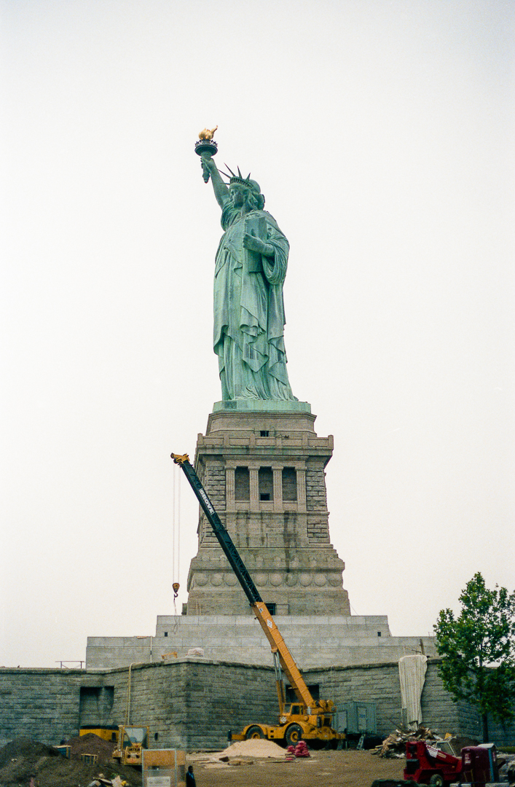

Moorland Studios is a multidisciplinary design studio specializing in metal sculpture conservation and
fabrication since 1983. This website is currently under construction.

Contact
25 South Main Street
Stockton, NJ 08559 By appointment only